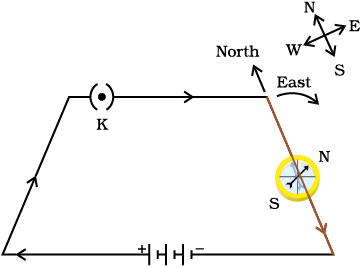
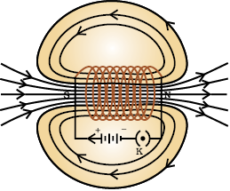

CHAPTER 13
Magnetic Effects of Electric Current
In the previous Chapter on ‘Electricity’ we learnt about the heating effects of electric current. What could be the other effects of electric current? We know that an electric current-carrying wire behaves like a magnet. Let us perform the following Activity to reinforce it.
Activity 13.1
- Take a straight thick copper wire and place it between the points X and Y in an electric circuit, as shown in Fig. 13.1. The wire xy is kept perpendicular to the plane of paper.
- Horizontally place a small compass near to this copper wire. See the position of its needle.
- Pass the current through the circuit by inserting the key into the plug.
- Observe the change in the position of the compass needle.
Figure 13.1 Compass needle is deflected on passing an electric current through a metallic conductor
We see that the needle is deflected. What does it mean? It means that the electric current through the copper wire has produced a magnetic effect. Thus we can say that electricity and magnetism are linked to each other. Then, what about the reverse possibility of an electric effect of moving magnets? In this Chapter we will study magnetic fields and such electromagnetic effects. We shall also study about electromagnets and electric motors which involve the magnetic effect of electric current, and electric generators which involve the electric effect of moving magnets.
Hans Christian Oersted (1777–1851)

Hans Christian Oersted, one of the leading scientists of the 19th century, played a crucial role in understanding electromagnetism. In 1820 he accidentally discovered that a compass needle got deflected when an electric current passed through a metallic wire placed nearby. Through this observation Oersted showed that electricity and magnetism were related phenomena. His research later created technologies such as the radio, television and fiber optics. The unit of magnetic field strength is named the Oersted in his honor.
13.1 MAGNETIC FIELD AND FIELD LINES
We are familiar with the fact that a compass needle gets deflected when brought near a bar magnet. A compass needle is, in fact, a small bar magnet. The ends of the compass needle point approximately towards north and south directions. The end pointing towards north is called north seeking or north pole. The other end that points towards south is called south seeking or south pole. Through various activities we have observed that like poles repel, while unlike poles of magnets attract each other.
QUESTION
1. Why does a compass needle get deflected when brought near a bar magnet?
Activity 13.2
- Fix a sheet of white paper on a drawing board using some adhesive material.
- Place a bar magnet in the centre of it.
- Sprinkle some iron filings uniformly around the bar magnet (Fig. 13.2). A salt-sprinkler may be used for this purpose.
- Now tap the board gently.
- What do you observe?
Figure 13.2 Iron filings near the bar magnet align themselves along the field lines.
The iron filings arrange themselves in a pattern as shown Fig. 13.2. Why do the iron filings arrange in such a pattern? What does this pattern demonstrate? The magnet exerts its influence in the region surrounding it. Therefore the iron filings experience a force. The force thus exerted makes iron filings to arrange in a pattern. The region surrounding a magnet, in which the force of the magnet can be detected, is said to have a magnetic field. The lines along which the iron filings align themselves represent magnetic field lines.
Are there other ways of obtaining magnetic field lines around a bar magnet? Yes, you can yourself draw the field lines of a bar magnet.
Activity 13.3
- Take a small compass and a bar magnet.
- Place the magnet on a sheet of white paper fixed on a drawing board, using some adhesive material.
- Mark the boundary of the magnet.
- Place the compass near the north pole of the magnet. How does it behave? The south pole of the needle points towards the north pole of the magnet. The north pole of the compass is directed away from the north pole of the magnet.
- Mark the position of two ends of the needle.
- Now move the needle to a new position such that its south pole occupies the position previously occupied by its north pole.
- In this way, proceed step by step till you reach the south pole of the magnet as shown in Fig. 13.3.
- Join the points marked on the paper by a smooth curve. This curve represents a field line.
- Repeat the above procedure and draw as many lines as you can. You will get a pattern shown in Fig. 13.4. These lines represent the magnetic field around the magnet. These are known as magnetic field lines.
- Observe the deflection in the compass needle as you move it along a field line. The deflection increases as the needle is moved towards the poles.
Figure 13.3 Drawing a magnetic field line with the help of a compass needle
Figure 13.4 Field lines around a bar magnet
Magnetic field is a quantity that has both direction and magnitude. The direction of the magnetic field is taken to be the direction in which a north pole of the compass needle moves inside it. Therefore it is taken by convention that the field lines emerge from north pole and merge at the south pole (note the arrows marked on the field lines in Fig. 13.4). Inside the magnet, the direction of field lines is from its south pole to its north pole. Thus the magnetic field lines are closed curves.
The relative strength of the magnetic field is shown by the degree of closeness of the field lines. The field is stronger, that is, the force acting on the pole of another magnet placed is greater where the field lines are crowded (see Fig. 13.4).
No two field-lines are found to cross each other. If they did, it would mean that at the point of intersection, the compass needle would point towards two directions, which is not possible.
13.2 MAGNETIC FIELD DUE TO A CURRENT-CARRYING CONDUCTOR
In Activity 13.1, we have seen that an electric current through a metallic conductor produces a magnetic field around it. In order to find the direction of the field produced let us repeat the activity in the following way –
Activity 13.4
- Take a long straight copper wire, two or three cells of 1.5 V each, and a plug key. Connect all of them in series as shown in Fig. 13.5 (a).
- Place the straight wire parallel to and over a compass needle.
- Plug the key in the circuit.
- Observe the direction of deflection of the north pole of the needle. If the current flows from north to south, as shown in Fig. 13.5 (a), the north pole of the compass needle would move towards the east.
- Replace the cell connections in the circuit as shown in Fig. 13.5 (b). This would result in the change of the direction of current through the copper wire, that is, from south to north.
- Observe the change in the direction of deflection of the needle. You will see that now the needle moves in opposite direction, that is, towards the west [Fig. 13.5 (b)]. It means that the direction of magnetic field produced by the electric current is also reversed.

(a)
(b)
Figure 13.5 A simple electric circuit in which a straight copper wire is placed parallel to and over a compass needle. The deflection in the needle becomes opposite when the direction of the current is reversed.
13.2.1 Magnetic Field due to a Current through a Straight Conductor
What determines the pattern of the magnetic field generated by a current through a conductor? Does the pattern depend on the shape of the conductor? We shall investigate this with an activity.
We shall first consider the pattern of the magnetic field around a straight conductor carrying current.
Activity 13.5
- Take a battery (12 V), a variable resistance (or a rheostat), an ammeter (0–5 A), a plug key, connecting wires, and a long straight thick copper wire.
- Insert the thick wire through the centre, normal to the plane of a rectangular cardboard. Take care that the cardboard is fixed and does not slide up or down.
- Connect the copper wire vertically between the points X and Y, as shown in Fig. 13.6 (a), in series with the battery, a plug and key.
- Sprinkle some iron filings uniformly on the cardboard. (You may use a salt sprinkler for this purpose.)
- Keep the variable of the rheostat at a fixed position and note the current through the ammeter.
- Close the key so that a current flows through the wire. Ensure that the copper wire placed between the points X and Y remains vertically straight.
- Gently tap the cardboard a few times. Observe the pattern of the iron filings. You would find that the iron filings align themselves showing a pattern of concentric circles around the copper wire (Fig. 13.6).
- What do these concentric circles represent? They represent the magnetic field lines.
- How can the direction of the magnetic field be found? Place a compass at a point (say P) over a circle. Observe the direction of the needle. The direction of the north pole of the compass needle would give the direction of the field lines produced by the electric current through the straight wire at point P. Show the direction by an arrow.
- Does the direction of magnetic field lines get reversed if the direction of current through the straight copper wire is reversed? Check it.
(a) (b)
Figure 13.6 (a) A pattern of concentric circles indicating the field lines of a magnetic field around a straight conducting wire. The arrows in the circles show the direction of the field lines. (b) A close up of the pattern obtained.
What happens to the deflection of the compass needle placed at a given point if the current in the copper wire is changed? To see this, vary the current in the wire. We find that the deflection in the needle also changes. In fact, if the current is increased, the deflection also increases. It indicates that the magnitude of the magnetic field produced at a given point increases as the current through the wire increases.
What happens to the deflection of the needle if the compass is moved away from the copper wire but the current through the wire remains the same? To see this, now place the compass at a farther point from the conducting wire (say at point Q). What change do you observe? We see that the deflection in the needle decreases. Thus the magnetic field produced by a given current in the conductor decreases as the distance from it increases. From Fig. 13.6, it can be noticed that the concentric circles representing the magnetic field around a current-carrying straight wire become larger and larger as we move away from it.
13.2.2 Right-Hand Thumb Rule
A convenient way of finding the direction of magnetic field associated with a current-carrying conductor is is given in Fig. 13.7.
Imagine that you are holding a current-carrying straight conductor in your right hand such that the thumb points towards the direction of current. Then your fingers will wrap around the conductor in the direction of the field lines of the magnetic field, as shown in Fig. 13.7. This is known as the right-hand thumb rule*.

Figure 13.7 Right-hand thumb rule
Example 13.1
A current through a horizontal power line flows in east to west direction. What is the direction of magnetic field at a point directly below it and at a point directly above it?
Solution
The current is in the east-west direction. Applying the right-hand thumb rule, we get that the magnetic field (at any point below or above the wire) turns clockwise in a plane perpendicular to the wire, when viewed from the east end, and anti-clockwise, when viewed from the west end.
QUESTIONS
1. Draw magnetic field lines around a bar magnet.
2. List the properties of magnetic field lines.
3. Why don’t two magnetic field lines of force intersect each other?
13.2.3 Magnetic Field due to a Current through a Circular Loop
We have so far observed the pattern of the magnetic field lines produced around a current-carrying straight wire. Suppose this straight wire is bent in the form of a circular loop and a current is passed through it. How would the magnetic field lines look like? We know that the magnetic field produced by a current-carrying straight wire depends inversely on the distance from it. Similarly at every point of a current-carrying circular loop, the concentric circles representing the magnetic field around it would become larger and larger as we move away from the wire (Fig. 13.8).
Figure 13.8 Magnetic field lines of the field produced by a current-carrying circular loop
By the time we reach at the centre of the circular loop, the arcs of these big circles would appear as straight lines. Every point on the wire carrying current would give rise to the magnetic field appearing as straight lines at the center of the loop. By applying the right hand rule, it is easy to check that every section of the wire contributes to the magnetic field lines in the same direction within the loop.
* This rule is also called Maxwell’s corkscrew rule. If we consider ourselves driving a corkscrew in the direction of the current, then the direction of the rotation of corkscrew is the direction of the magnetic field.
We know that the magnetic field produced by a current-carrying wire at a given point depends directly on the current passing through it. Therefore, if there is a circular coil having n turns, the field produced is n times as large as that produced by a single turn. This is because the current in each circular turn has the same direction, and the field due to each turn then just adds up.
Activity 13.6
- Take a rectangular cardboard having two holes. Insert a circular coil having large number of turns through them, normal to the plane of the cardboard.
- Connect the ends of the coil in series with a battery, a key and a rheostat, as shown in Fig. 13.9.
- Sprinkle iron filings uniformly on the cardboard.
- Plug the key.
- Tap the cardboard gently a few times. Note the pattern of the iron filings that emerges on the cardboard.

Figure 13.9 Magnetic field produced by a current-carrying circular coil.
13.2.4 Magnetic Field due to a Current in a Solenoid
A coil of many circular turns of insulated copper wire wrapped closely in the shape of a cylinder is called a solenoid. The pattern of the magnetic field lines around a current-carrying solenoid is shown in Fig. 13.10.

Figure 13.10 Field lines of the magnetic field through and around a current carrying solenoid.
Compare the pattern of the field with the magnetic field around a bar magnet (Fig. 13.4). Do they look similar? Yes, they are similar. In fact, one end of the solenoid behaves as a magnetic north pole, while the other behaves as the south pole. The field lines inside the solenoid are in the form of parallel straight lines. This indicates that the magnetic field is the same at all points inside the solenoid. That is, the field is uniform inside the solenoid.
A strong magnetic field produced inside a solenoid can be used to magnetise a piece of magnetic material, like soft iron, when placed inside the coil (Fig. 13.11). The magnet so formed is called an electromagnet.
Figure 13.11 A current-carrying solenoid coil is used to magnetise steel rod inside it – an electromagnet.
QUESTIONS
1. Consider a circular loop of wire lying in the plane of the table. Let the current pass through the loop clockwise. Apply the right-hand rule to find out the direction of the magnetic field inside and outside the loop.
2. The magnetic field in a given region is uniform. Draw a diagram to represent it.
3. Choose the correct option.
The magnetic field inside a long straight solenoid-carrying current
(a) is zero.
(b) decreases as we move towards its end.
(c) increases as we move towards its end.
(d) is the same at all points.
13.3 FORCE ON A CURRENT-CARRYING CONDUCTOR IN A MAGNETIC FIELD
We have learnt that an electric current flowing through a conductor produces a magnetic field. The field so produced exerts a force on a magnet placed in the vicinity of the conductor. French scientist Andre Marie Ampere (1775–1836) suggested that the magnet must also exert an equal and opposite force on the current-carrying conductor. The force due to a magnetic field acting on a current-carrying conductor can be demonstrated through the following activity.
Activity 13.7
- Take a small aluminium rod AB (of about 5 cm). Using two connecting wires suspend it horizontally from a stand, as shown in Fig. 13.12.
- Place a strong horse-shoe magnet in such a way that the rod lies between the two poles with the magnetic field directed upwards. For this put the north pole of the magnet vertically below and south pole vertically above the aluminium rod (Fig. 13.12).
- Connect the aluminium rod in series with a battery, a key and a rheostat.
- Now pass a current through the aluminium rod from end B to end A.
- What do you observe? It is observed that the rod is displaced towards the left. You will notice that the rod gets displaced.
- Reverse the direction of current flowing through the rod and observe the direction of its displacement. It is now towards the right.
- Why does the rod get displaced?
Figure 13.12 A current-carrying rod, AB, experiences a force perpendicular to its length and the magnetic field. Support for the magnet is not shown here, for simplicity
The displacement of the rod in the above activity suggests that a force is exerted on the current-carrying aluminium rod when it is placed in a magnetic field. It also suggests that the direction of force is also reversed when the direction of current through the conductor is reversed. Now change the direction of field to vertically downwards by interchanging the two poles of the magnet. It is once again observed that the direction of force acting on the current-carrying rod gets reversed. It shows that the direction of the force on the conductor depends upon the direction of current and the direction of the magnetic field. Experiments have shown that the displacement of the rod is largest (or the magnitude of the force is the highest) when the direction of current is at right angles to the direction of the magnetic field. In such a condition we can use a simple rule to find the direction of the force on the conductor.
In Activity 13.7, we considered the direction of the current and that of the magnetic field perpendicular to each other and found that the force is perpendicular to both of them. The three directions can be illustrated through a simple rule, called Fleming’s left-hand rule. According to this rule, stretch the thumb, forefinger and middle finger of your left hand such that they are mutually perpendicular (Fig. 13.13). If the first finger points in the direction of magnetic field and the second finger in the direction of current, then the thumb will point in the direction of motion or the force acting on the conductor.
Figure 13.13 Fleming’s left-hand rule
Devices that use current-carrying conductors and magnetic fields include electric motor, electric generator, loudspeakers, microphones and measuring instruments. In the next few sections we shall study about electric motors and generators.
Example 13.2
An electron enters a magnetic field at right angles to it, as shown in Fig. 13.14. The direction of force acting on the electron will be
(a) to the right.
(b) to the left.
(c) out of the page.
(d) into the page.
Solution
Answer is option (d). The direction of force is perpendicular to the direction of magnetic field and current as given by Fleming’s left hand rule. Recall that the direction of current is taken opposite to the direction of motion of electrons. The force is therefore directed into the page.
Figure 13.14
QUESTIONS
1. Which of the following property of a proton can change while it moves freely in a magnetic field? (There may be more than one correct answer.)
(a) mass (b) speed (c) velocity (d) momentum
2. In Activity 13.7, how do we think the displacement of rod AB will be affected if (i) current in rod AB is increased; (ii) a stronger horse-shoe magnet is used; and (iii) length of the rod AB is increased?
3. A positively-charged particle (alpha-particle) projected towards west is deflected towards north by a magnetic field. The direction of magnetic field is
(a) towards south (b) towards east (c) downward (d) upward
More to Know!
Magnetism in medicine
An electric current always produces a magnetic field. Even weak ion currents that travel along the nerve cells in our body produce magnetic fields. When we touch something, our nerves carry an electric impulse to the muscles we need to use. This impulse produces a temporary magnetic field. These fields are very weak and are about one-billionth of the earth’s magnetic field. Two main organs in the human body where the magnetic field produced is significant, are the heart and the brain. The magnetic field inside the body forms the basis of obtaining the images of different body parts. This is done using a technique called Magnetic Resonance Imaging (MRI). Analysis of these images helps in medical diagnosis. Magnetism has, thus, got important uses in medicine.
13.4 ELECTRIC MOTOR
An electric motor is a rotating device that converts electrical energy to mechanical energy. Electric motor is used as an important component in electric fans, refrigerators, mixers, washing machines, computers, MP3 players etc. Do you know how an electric motor works?
An electric motor, as shown in Fig. 13.15, consists of a rectangular coil ABCD of insulated copper wire. The coil is placed between the two poles of a magnetic field such that the arm AB and CD are perpendicular to the direction of the magnetic field. The ends of the coil are connected to the two halves P and Q of a split ring. The inner sides of these halves are insulated and attached to an axle. The external conducting edges of P and Q touch two conducting stationary brushes X and Y, respectively, as shown in the Fig. 13.15.
Figure 13.15 A simple electric motor
Current in the coil ABCD enters from the source battery through conducting brush X and flows back to the battery through brush Y. Notice that the current in arm AB of the coil flows from A to B. In arm CD it flows from C to D, that is, opposite to the direction of current through arm AB. On applying Fleming’s left hand rule for the direction of force on a current-carrying conductor in a magnetic field (see Fig. 13.13). We find that the force acting on arm AB pushes it downwards while the force acting on arm CD pushes it upwards. Thus the coil and the axle O, mounted free to turn about an axis, rotate anti-clockwise. At half rotation, Q makes contact with the brush X and P with brush Y. Therefore the current in the coil gets reversed and flows along the path DCBA. A device that reverses the direction of flow of current through a circuit is called a commutator. In electric motors, the split ring acts as a commutator. The reversal of current also reverses the direction of force acting on the two arms AB and CD. Thus the arm AB of the coil that was earlier pushed down is now pushed up and the arm CD previously pushed up is now pushed down. Therefore the coil and the axle rotate half a turn more in the same direction. The reversing of the current is repeated at each half rotation, giving rise to a continuous rotation of the coil and to the axle.
The commercial motors use (i) an electromagnet in place of permanent magnet; (ii) large number of turns of the conducting wire in the current- carrying coil; and (iii) a soft iron core on which the coil is wound. The soft iron core, on which the coil is wound, plus the coils, is called an armature. This enhances the power of the motor.
QUESTIONS
1. State Fleming’s left-hand rule.
2. What is the principle of an electric motor?
3. What is the role of the split ring in an electric motor?
13.5 ELECTROMAGNETIC INDUCTION
We have studied that when a current-carrying conductor is placed in a magnetic field such that the direction of current is perpendicular to the magnetic field, it experiences a force. This force causes the conductor to move. Now let us imagine a situation in which a conductor is moving inside a magnetic field or a magnetic field is changing around a fixed conductor. What will happen? This was first studied by English physicist Michael Faraday. In 1831, Faraday made an important breakthrough by discovering how a moving magnet can be used to generate electric currents. To observe this effect, let us perform the following activity.
Activity 13.8
- Take a coil of wire AB having a large number of turns.
- Connect the ends of the coil to a galvanometer as shown in Fig. 13.16.
- Take a strong bar magnet and move its north pole towards the end B of the coil. Do you find any change in the galvanometer needle?
- There is a momentary deflection in the needle of the galvanometer, say to the right. This indicates the presence of a current in the coil AB. The deflection becomes zero the moment the motion of the magnet stops.
- Now withdraw the north pole of the magnet away from the coil. Now the galvanometer is deflected toward the left, showing that the current is now set up in the direction opposite to the first.
- Place the magnet stationary at a point near to the coil, keeping its north pole towards the end B of the coil. We see that the galvanometer needle deflects toward the right when the coil is moved towards the north pole of the magnet. Similarly the needle moves toward left when the coil is moved away.
- When the coil is kept stationary with respect to the magnet, the deflection of the galvanometer drops to zero. What do you conclude from this activity?
Figure 13.16 Moving a magnet towards a coil sets up a current in the coil circuit, as indicated by deflection in the galvanometer needle.
A galvanometer is an instrument that can detect the presence of a current in a circuit. The pointer remains at zero (the centre of the scale) for zero current flowing through it. It can deflect either to the left or to the right of the zero mark depending on the direction of current.
You can also check that if you had moved south pole of the magnet towards the end B of the coil, the deflections in the galvanometer would just be opposite to the previous case. When the coil and the magnet are both stationary, there is no deflection in the galvanometer. It is, thus, clear from this activity that motion of a magnet with respect to the coil produces an induced potential difference, which sets up an induced electric current in the circuit.
Michael Faraday (1791–1867)
Michael Faraday was an experimental physicist. He had no formal education. He worked in a book-binding shop during his early years. He used to read books that came for binding. This way Faraday developed his interest in science. He got an opportunity to listen to some public lectures by Humphrey Davy of Royal Institute. He made careful notes of Davy’s lectures and sent them to Davy. Soon he was made an assistant in Davy’s laboratory at the Royal Institute. Faraday made several path-breaking discoveries that include electromagnetic induction and the laws of electrolysis. Several universities conferred on him the honorary degrees but he turned down such honours. Faraday loved his science work more than any honour.
Let us now perform a variation of Activity 13.8 in which the moving magnet is replaced by a current-carrying coil and the current in the coil can be varied.
Activity 13.9
- Take two different coils of copper wire having large number of turns (say 50 and 100 turns respectively). Insert them over a non-conducting cylindrical roll, as shown in Fig. 13.17. (You may use a thick paper roll for this purpose.)
- Connect the coil-1, having larger number of turns, in series with a battery and a plug key. Also connect the other coil-2 with a galvanometer as shown.
- Plug in the key. Observe the galvanometer. Is there a deflection in its needle? You will observe that the needle of the galvanometer instantly jumps to one side and just as quickly returns to zero, indicating a momentary current in coil-2.
- Disconnect coil-1 from the battery. You will observe that the needle momentarily moves, but to the opposite side. It means that now the current flows in the opposite direction in coil-2.

Figure 13.17 Current is induced in coil-2 when current in coil-1 is changed
In this activity we observe that as soon as the current in coil-1 reaches either a steady value or zero, the galvanometer in coil-2 shows no deflection.
From these observations, we conclude that a potential difference is induced in the coil-2 whenever the electric current through the coil–1 is changing (starting or stopping). Coil-1 is called the primary coil and coil-2 is called the secondary coil. As the current in the first coil changes, the magnetic field associated with it also changes. Thus the magnetic field lines around the secondary coil also change. Hence the change in magnetic field lines associated with the secondary coil is the cause of induced electric current in it. This process, by which a changing magnetic field in a conductor induces a current in another conductor, is called electromagnetic induction. In practice we can induce current in a coil either by moving it in a magnetic field or by changing the magnetic field around it. It is convenient in most situations to move the coil in a magnetic field.
The induced current is found to be the highest when the direction of motion of the coil is at right angles to the magnetic field. In this situation, we can use a simple rule to know the direction of the induced current. Stretch the thumb, forefinger and middle finger of right hand so that they are perpendicular to each other, as shown in Fig. 13.18. If the forefinger indicates the direction of the magnetic field and the thumb shows the direction of motion of conductor, then the middle finger will show the direction of induced current. This simple rule is called Fleming’s right-hand rule.
Figure 13.18 Fleming’s right-hand rule
QUESTION
1. Explain different ways to induce current in a coil.
13.6 ELECTRIC GENERATOR
Based on the phenomenon of electromagnetic induction, the experiments studied above generate induced current, which is usually very small. This principle is also employed to produce large currents for use in homes and industry. In an electric generator, mechanical energy is used to rotate a conductor in a magnetic field to produce electricity.
An electric generator, as shown in Fig. 13.19, consists of a rotating rectangular coil ABCD placed between the two poles of a permanent magnet. The two ends of this coil are connected to the two rings R1 and R2. The inner side of these rings are made insulated. The two conducting stationary brushes B1 and B2 are kept pressed separately on the rings R1 and R2, respectively. The two rings R1 and R2 are internally attached to an axle. The axle may be mechanically rotated from outside to rotate the coil inside the magnetic field. Outer ends of the two brushes are connected to the galvanometer to show the flow of current in the given external circuit.
When the axle attached to the two rings is rotated such that the arm AB moves up (and the arm CD moves down) in the magnetic field produced by the permanent magnet. Let us say the coil ABCD is rotated clockwise in the arrangement shown in Fig. 13.19.
Figure 13.19 Illustration of the principle of electric generator
By applying Fleming’s right-hand rule, the induced currents are set up in these arms along the directions AB and CD. Thus an induced current flows in the direction ABCD. If there are larger numbers of turns in the coil, the current generated in each turn adds up to give a large current through the coil. This means that the current in the external circuit flows from B2 to B1.
After half a rotation, arm CD starts moving up and AB moving down. As a result, the directions of the induced currents in both the arms change, giving rise to the net induced current in the direction DCBA. The current in the external circuit now flows from B1 to B2. Thus after every half rotation the polarity of the current in the respective arms changes. Such a current, which changes direction after equal intervals of time, is called an alternating current (abbreviated as AC). This device is called an AC generator.
To get a direct current (DC, which does not change its direction with time), a split-ring type commutator must be used. With this arrangement, one brush is at all times in contact with the arm moving up in the field, while the other is in contact with the arm moving down. We have seen the working of a split ring commutator in the case of an electric motor (see Fig. 13.15). Thus a unidirectional current is produced. The generator is thus called a DC generator.
The difference between the direct and alternating currents is that the direct current always flows in one direction, whereas the alternating current reverses its direction periodically. Most power stations constructed these days produce AC. In India, the AC changes direction after every 1/100 second, that is, the frequency of AC is 50 Hz. An important advantage of AC over DC is that electric power can be transmitted over long distances without much loss of energy.
QUESTIONS
1. State the principle of an electric generator.
2. Name some sources of direct current.
3. Which sources produce alternating current?
4. Choose the correct option.
A rectangular coil of copper wires is rotated in a magnetic field. The direction of the induced current changes once in each
(a) two revolutions (b) one revolution
(c) half revolution (d) one-fourth revolution
13.7 DOMESTIC ELECTRIC CIRCUITS
In our homes, we receive supply of electric power through a main supply (also called mains), either supported through overhead electric poles or by underground cables. One of the wires in this supply, usually with red insulation cover, is called live wire (or positive). Another wire, with black insulation, is called neutral wire (or negative). In our country, the potential difference between the two is 220 V.
At the meter-board in the house, these wires pass into an electricity meter through a main fuse. Through the main switch they are connected to the line wires in the house. These wires supply electricity to separate circuits within the house. Often, two separate circuits are used, one of 15 A current rating for appliances with higher power ratings such as geysers, air coolers, etc. The other circuit is of 5 A current rating for bulbs, fans, etc. The earth wire, which has insulation of green colour, is usually connected to a metal plate deep in the earth near the house. This is used as a safety measure, especially for those appliances that have a metallic body, for example, electric press, toaster, table fan, refrigerator, etc. The metallic body is connected to the earth wire, which provides a low-resistance conducting path for the current. Thus, it ensures that any leakage of current to the metallic body of the appliance keeps its potential to that of the earth, and the user may not get a severe electric shock.
Figure 13.20 A schematic diagram of one of the common domestic circuits
Figure 13.20 gives a schematic diagram of one of the common domestic circuits. In each separate circuit, different appliances can be connected across the live and neutral wires. Each appliance has a separate switch to ‘ON’/‘OFF’ the flow of current through it. In order that each appliance has equal potential difference, they are connected parallel to each other.
Electric fuse is an important component of all domestic circuits. We have already studied the principle and working of a fuse in the previous chapter (see Section 12.7). A fuse in a circuit prevents damage to the appliances and the circuit due to overloading. Overloading can occur when the live wire and the neutral wire come into direct contact. (This occurs when the insulation of wires is damaged or there is a fault in the appliance.) In such a situation, the current in the circuit abruptly increases. This is called short-circuiting. The use of an electric fuse prevents the electric circuit and the appliance from a possible damage by stopping the flow of unduly high electric current. The Joule heating that takes place in the fuse melts it to break the electric circuit. Overloading can also occur due to an accidental hike in the supply voltage. Sometimes overloading is caused by connecting too many appliances to a single socket.
QUESTIONS
1. Name two safety measures commonly used in electric circuits and appliances.
2. An electric oven of 2 kW power rating is operated in a domestic electric circuit (220 V) that has a current rating of 5 A. What result do you expect? Explain.
3. What precaution should be taken to avoid the overloading of domestic electric circuits?
What you have learnt
- A compass needle is a small magnet. Its one end, which points towards north, is called a north pole, and the other end, which points towards south, is called a south pole.
- A magnetic field exists in the region surrounding a magnet, in which the force of the magnet can be detected.
- Field lines are used to represent a magnetic field. A field line is the path along which a hypothetical free north pole would tend to move. The direction of the magnetic field at a point is given by the direction that a north pole placed at that point would take. Field lines are shown closer together where the magnetic field is greater.
- A metallic wire carrying an electric current has associated with it a magnetic field. The field lines about the wire consist of a series of concentric circles whose direction is given by the right-hand rule.
- The pattern of the magnetic field around a conductor due to an electric current flowing through it depends on the shape of the conductor. The magnetic field of a solenoid carrying a current is similar to that of a bar magnet.
- An electromagnet consists of a core of soft iron wrapped around with a coil of insulated copper wire.
- A current-carrying conductor when placed in a magnetic field experiences a force. If the direction of the field and that of the current are mutually perpendicular to each other, then the force acting on the conductor will be perpendicular to both and will be given by Fleming’s left-hand rule. This is the basis of an electric motor. An electric motor is a device that converts electric energy into mechanical energy.
- The phenomenon of electromagnetic induction is the production of induced current in a coil placed in a region where the magnetic field changes with time. The magnetic field may change due to a relative motion between the coil and a magnet placed near to the coil. If the coil is placed near to a current-carrying conductor, the magnetic field may change either due to a change in the current through the conductor or due to the relative motion between the coil and conductor. The direction of the induced current is given by the Fleming’s right-hand rule.
- A generator converts mechanical energy into electrical energy. It works on the basis of electromagnetic induction.
- In our houses we receive AC electric power of 220 V with a frequency of 50 Hz. One of the wires in this supply is with red insulation, called live wire. The other one is of black insulation, which is a neutral wire. The potential difference between the two is 220 V. The third is the earth wire that has green insulation and this is connected to a metallic body deep inside earth. It is used as a safety measure to ensure that any leakage of current to a metallic body does not give any severe shock to a user.
- Fuse is the most important safety device, used for protecting the circuits due to short-circuiting or overloading of the circuits.
Exercises
1. Which of the following correctly describes the magnetic field near a long straight wire?
(a) The field consists of straight lines perpendicular to the wire.
(b) The field consists of straight lines parallel to the wire.
(c) The field consists of radial lines originating from the wire.
(d) The field consists of concentric circles centred on the wire.
2. The phenomenon of electromagnetic induction is
(a) the process of charging a body.
(b) the process of generating magnetic field due to a current passing through a coil.
(c) producing induced current in a coil due to relative motion between a magnet and the coil.
(d) the process of rotating a coil of an electric motor.
3. The device used for producing electric current is called a
(a) generator.
(b) galvanometer.
(c) ammeter.
(d) motor.
4. The essential difference between an AC generator and a DC generator is that
(a) AC generator has an electromagnet while a DC generator has permanent magnet.
(b) DC generator will generate a higher voltage.
(c) AC generator will generate a higher voltage.
(d) AC generator has slip rings while the DC generator has a commutator.
5. At the time of short circuit, the current in the circuit
(a) reduces substantially.
(b) does not change.
(c) increases heavily.
(d) vary continuously.
6. State whether the following statements are true or false.
(a) An electric motor converts mechanical energy into electrical energy.
(b) An electric generator works on the principle of electromagnetic induction.
(c) The field at the centre of a long circular coil carrying current will be parallel straight lines.
(d) A wire with a green insulation is usually the live wire of an electric supply.
7. List two methods of producing magnetic fields.
8. How does a solenoid behave like a magnet? Can you determine the north and south poles of a current–carrying solenoid with the help of a bar magnet? Explain.
9. When is the force experienced by a current–carrying conductor placed in a magnetic field largest?
10. Imagine that you are sitting in a chamber with your back to one wall. An electron beam, moving horizontally from back wall towards the front wall, is deflected by a strong magnetic field to your right side. What is the direction of magnetic field?
11. Draw a labelled diagram of an electric motor. Explain its principle and working. What is the function of a split ring in an electric motor?
12. Name some devices in which electric motors are used.
13. A coil of insulated copper wire is connected to a galvanometer. What will happen if a bar magnet is (i) pushed into the coil, (ii) withdrawn from inside the coil, (iii) held stationary inside the coil?
14. Two circular coils A and B are placed closed to each other. If the current in the coil A is changed, will some current be induced in the coil B? Give reason.
15. State the rule to determine the direction of a (i) magnetic field produced around a straight conductor-carrying current, (ii) force experienced by a current-carrying straight conductor placed in a magnetic field which is perpendicular to it, and (iii) current induced in a coil due to its rotation in a magnetic field.
16. Explain the underlying principle and working of an electric generator by drawing a labelled diagram. What is the function of brushes?
17. When does an electric short circuit occur?
18. What is the function of an earth wire? Why is it necessary to earth metallic appliances?